Mão fechada com palma para a frente, polegar encostado ao lado do indicador.
Mão fechada com palma para a frente, polegar encostado ao lado do indicador.

Mão aberta com dedos apontados para cima e unidos com palma para a frente, polegar dobrado tocando a palma
da mão.
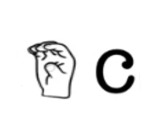
Mão com dedos curvados e quase se tocando.
Para a letra Ç (cedilha) , utilizar o mesmo movimento, porém deve-se balançar as mãos.
Para a letra Ç (cedilha) , utilizar o mesmo movimento, porém deve-se balançar as mãos.

Mão com indicador apontado para cima enquanto os demais dedos formam um círculo.
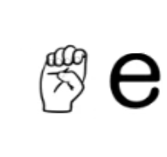
Mão com dedos curvados, palmas para a frente.
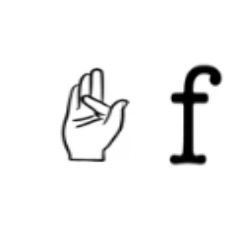
Mão com dedos mínimo, anelar e médio apontados para cima, dedo indicador flexionado apontado para a frente e
dedo polegar encostado ao lado do dedo indicador.
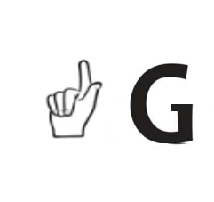
Mão com dedos mínimo, anelar e médio dobrados e encostados na palma. Dedo indicador apontado para cima com
palma para a frente e dedo polegar encostado na lateral do indicador.

Mão com dedos mínimo e anelar dobrados e encostados na palma. Dedos médio e indicador apontados para cima.
Dedo polegar colocado entre o dedo indicador e o dedo médio. Girar a mão pelo pulso, ficando com a palma
para dentro.
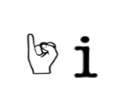
Mão fechada com palma para a frente com dedo mínimo apontado para cima.

Mão fechada com palma para a frente com dedo mínimo apontado para cima. Girar a mão pelo pulso, ficando a
palma para dentro.
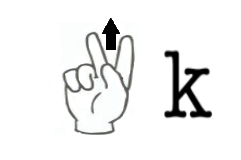
Mão com dedos mínimo e anelar dobrados e encostados na palma. Dedos médio e indicador apontados para cima.
Dedo polegar colocado entre o dedo médio. Mover a mão para cima.

Mão com dedos mínimo, anelar e médio dobrados e encostados na palma. Dedo indicador apontado para cima com
palma para a frente e dedo polegar apontando para a esquerda.
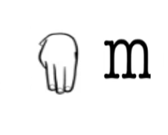
Mão com dedos indicador, médio e anelar apontados para baixo e distendidos, demais dedos dobrados e unidos,
escondidos.
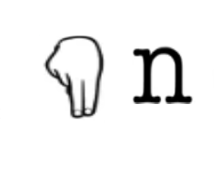
Grandes semelhanças com a letra M. Mão com dedos indicador e médio apontados para baixo, distendidos e
unidos, demais dedos dobrados e unidos, escondidos.

Mão com os dedos fazendo formato de um círculo, palma para a esquerda.

Mão com dedos mínimo e anelar dobrados e encostados na palma. Dedos médio e indicador apontados para frente,
Dedo polegar colocado entre o dedo indicador e o dedo médio.
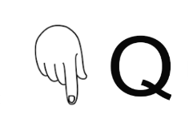
Mão com dedos mínimo, anelar e médio dobrados e encostados na palma. Dedo indicador apontado para baixo com
palma para dentro e dedo polegar encostado na lateral do indicador.
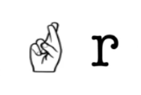
Mão com palma para a frente com dedos mínimo, anelar e polegar dobrados e unidos na frente da palma. Dedos
médio e indicador cruzados com indicador à frente.

Mão fechada com palma para frente com polegar à frente dos demais dedos.
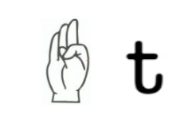
Mão com dedos mínimo, anelar e médio apontados para cima, dedo indicador flexionado apontado para a frente e
dedo polegar encostado do lado de dentro do dedo indicador.

Mão com palma para a frente, com dedos indicador e médio apontados para cima, DISTENDIDOS E UNIDOS, demais
dedos dobrados e unidos à frente da palma.
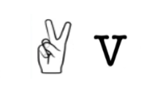
Mão com palma para a frente, com dedo indicador e médio apontados para cima, DISTENDIDOS E SEPARADOS, demais
dedos dobrados e unidos à frente da palma.

Mão com dedos indicador, médio e anelar apontados para cima, distendidos e separados, demais dedos dobrados
e unidos à frente da palma.
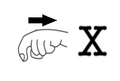
Mão com dedo indicador esticado e demais dedos fechados, mover a mão para trás/para baixo e ao mesmo tempo
flexionar o
dedo indicador.

Mão com palma para a frente, dedos polegar e mínimo distendidos, demais dedos fechados.

Mão com indicador apontados para cima, enquanto os demais dedos formam um círculo. Desenhar no ar a letra Z.